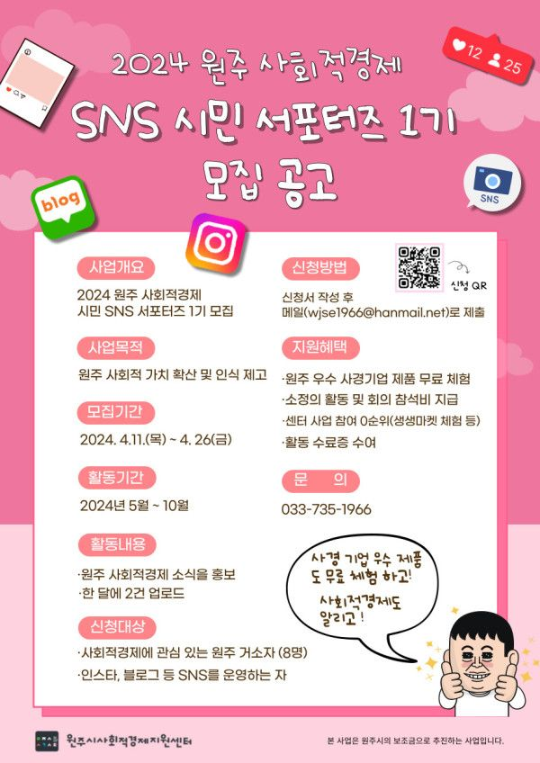

네트워크 소식 2024 원주 사회적경제 SNS 시민 서포터즈 1기 모집 소식2024. 4. 17.  사회적경제기업 우수 제품 무료 체험도 하고! 사회적경제도 알리고 싶다면?센터에서는 사회적경제 소식을 전달하고 홍보할 SNS 시민 서포터즈를 모집합니다!SNS를 운영하고 있고, 체험단 후기 쓸 자신이 있는 분이라면 환영! 자세한 모집 조건 등 내용은 웹포스터의 신청페이지(QR코드)를 참고해주세요! #사회적경제서포터즈 #시민서포터즈 #시민체험단 #사회적경제기업제품체험단 #SNS체험단 다음 글2024 원주 사회적경제 SNS 시민 서포터즈 체험단 후기 활동 참여 기업 모집이전 글2024 원주협동사회경제네트워크 신규조합원 가입설명회(4/12(금) 오전10:30) ← 목록으로